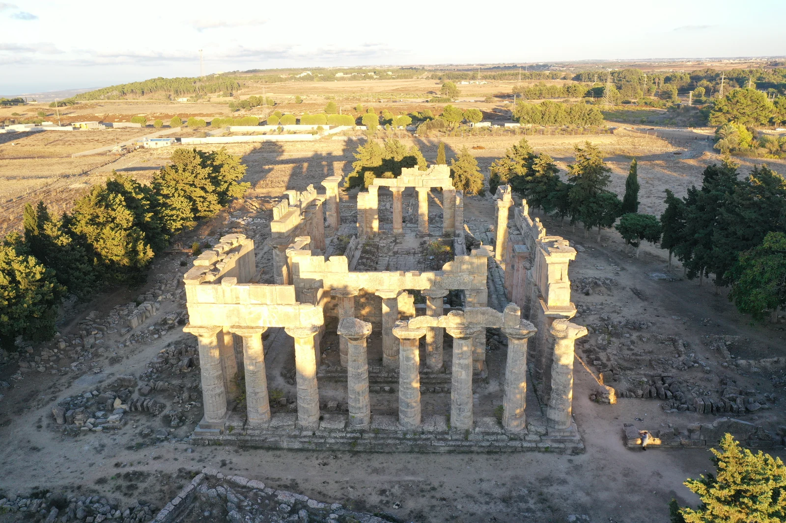

Visit Libya
Visit Libya

المنصة السياحية الرسمية لليبيا
اكتشف ليبيا
حيث يلتقي البحر المتوسط بالصحراء الكبرى، وتمتد حكايات الحضارات في تفاصيل الحياة اليومية.
استكشف حسب الاهتمام
اتبع ما يلهمك
اختر نمطًا لتظهر الأماكن المرتبطة به، أو تصفّح كل الطرق المؤدية إلى طبيعة ليبيا وتراثها.
ابدأ رحلتك إلى ليبيا
ماذا تريد أن تكتشف؟
وجهات مختارة
سبع نوافذ على ليبيا



التراث والحضارة
حكايات حملها البحر والصحراء
يربط تراث ليبيا بين مدن المتوسط وطرق التجارة الصحراوية والواحات القديمة والفن الصخري الممتد عبر آلاف السنين.
- مدن الحضاراتتحفظ لبدة الكبرى وصبراتة وشحات مشاهد أثرية واسعة ودالة.
- ذاكرة الصحراءيسجل الفن الصخري في أكاكوس تغير البيئة وحياة الإنسان عبر الصحراء.
- عمارة حيةتعكس غدامس خبرات أجيال تكيفت مع بيئة الواحة.
رحلتك، مرتبة بعناية
حوّل الإلهام إلى برنامج رحلة شخصي
استكشف الوجهات، ورتب مسارك يومًا بيوم، واحتفظ بخططك في «رحلاتي».
- 01اكتشفابحث عن الأماكن والأنماط التي تلهمك.
- 02خططرتب الوجهات في برنامج عملي يومًا بيوم.
- 03احفظاحتفظ برحلتك جاهزة في «رحلاتي».